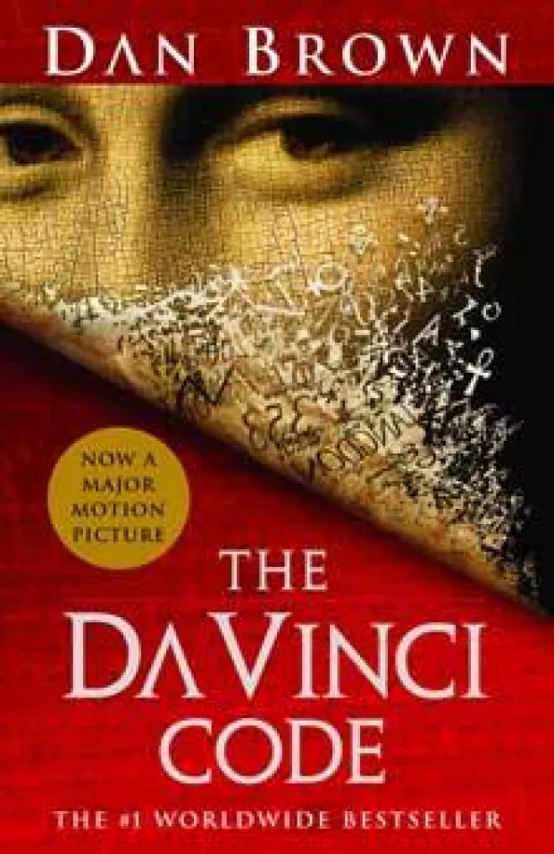
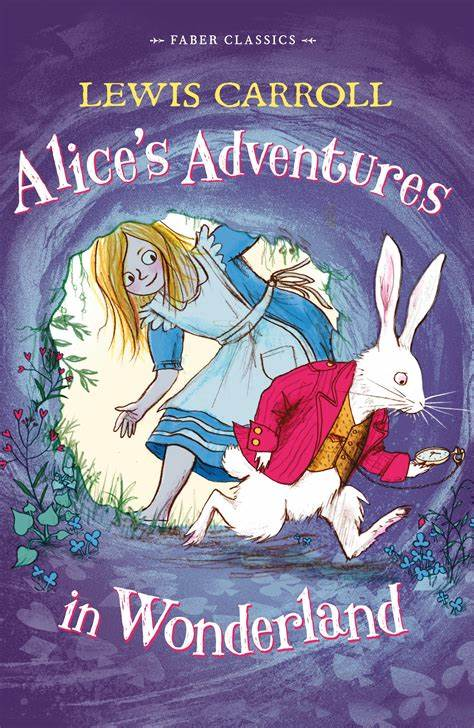

The Alchemist

Paulo Coelho
The Alchemist is a novel by Brazilian author Paulo Coelho which was first
published in 1988. Originally written in Portuguese, it became a widely translated international
bestseller. An allegorical novel, The Alchemist follows a young Andalusian shepherd in his journey to
the pyramids of Egypt, after having a recurring dream of finding a treasure there.
Gulliver's Travels
Jonathan Swift
Gulliver's Travels, or Travels into Several Remote Nations of the World. In Four Parts. By Lemuel Gulliver,
First a Surgeon, and then a Captain of Several Ships is a 1726 prose satire by the Irish writer and
clergyman Jonathan Swift, satirising both human nature and the "travellers' tales" literary subgenre. It is
Swift's best known full-length work, and a classic of English literature. Swift claimed that he wrote
Gulliver's Travels "to vex the world rather than divert it".
The Da Vinci Code

Dan Brown
The Da Vinci Code is a 2003 mystery thriller novel by Dan Brown. It is Brown's second novel to include the
character Robert Langdon: the first was his 2000 novel Angels & Demons. The Da Vinci Code follows
symbologist Robert Langdon and cryptologist Sophie Neveu after a murder in the Louvre Museum in Paris causes
them to become involved in a battle between the Priory of Sion and Opus Dei over the possibility of Jesus
Christ and Mary Magdalene having had a child together.
Dracula
Bram Stoker
Dracula is a novel by Bram Stoker, published in 1897. As an epistolary novel, the narrative is related
through letters, diary entries, and newspaper articles. It has no single protagonist, but opens with
solicitor Jonathan Harker taking a business trip to stay at the castle of a Transylvanian noble, Count
Dracula. Harker escapes the castle after discovering that Dracula is a vampire, and the Count moves to
England and plagues the seaside town of Whitby.
Alice's Adventures in Wonderland

Lewis Carroll
Alice's Adventures in Wonderland (commonly Alice in Wonderland) is an 1865 English novel by Lewis Carroll. It
details the story of a young girl named Alice who falls through a rabbit hole into a fantasy world of
anthropomorphic creatures. It is seen as an example of the literary nonsense genre. The artist John Tenniel
provided 42 wood engraved illustrations for the book.
Anne of Green Gables
Lucy Maud Montgomery
Anne of Green Gables is a 1908 novel by Canadian author Lucy Maud Montgomery (published as L. M. Montgomery).
Written for all ages, it has been considered a classic children's novel since the mid-20th century. Set in
the late 19th century, the novel recounts the adventures of Anne Shirley, an 11-year-old orphan girl, who is
sent by mistake to two middle-aged siblings, Matthew and Marilla Cuthbert.
The Call of the Wild
Jack London
The Call of the Wild is a short adventure novel by Jack London, published in 1903 and set in Yukon, Canada,
during the 1890s Klondike Gold Rush, when strong sled dogs were in high demand. The central character of the
novel is a dog named Buck. The story opens at a ranch in Santa Clara Valley, California, when Buck is stolen
from his home and sold into service as a sled dog in Alaska.
The Diary of a Young Girl
Anne Frank
The Diary of a Young Girl, also known as The Diary of Anne Frank, is a book of the writings from the
Dutch-language diary kept by Anne Frank while she was in hiding for two years with her family during the
Nazi occupation of the Netherlands. The family was apprehended in 1944, and Anne Frank died of typhus in the
Bergen-Belsen concentration camp in 1945.